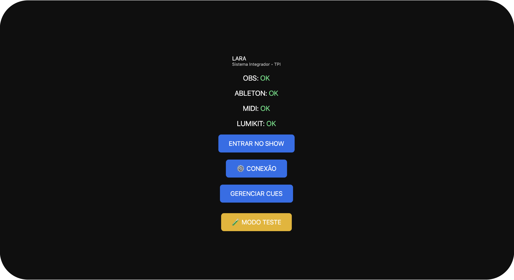
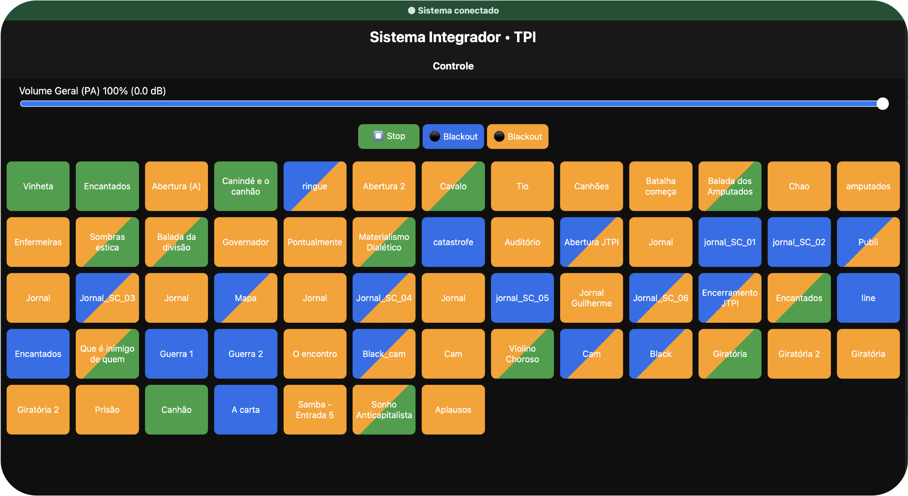

LARA: Conheça mais
O sistema de automação que unifica luz, som e vídeo em uma única interface. Otimizado para confiabilidade crítica e integração total.

Interface de controle central do sistema.

Matriz de automação e gerenciamento de cues.
Open Source & Desenvolvimento
O LARA encontra-se em fase final de desenvolvimento. Meu compromisso é disponibilizar esta tecnologia gratuitamente para grupos e companhias culturais (teatro, dança e artes performáticas), atuando como uma ferramenta de fomento e suporte operacional. Acredito que a tecnologia deve ser um facilitador que remove barreiras técnicas, permitindo que a visão artística do palco se realize sem as limitações de sistemas complexos e inacessíveis.
Frontier Science
Modelagem lógica de sistemas complexos. Decifrando a natureza através da matemática computacional.
Sistemas Ciberfísicos
Integração hardware e software. Automação de alta precisão, incluindo o sistema LARA.
Dados & Inteligência
Extração de verdade científica por meio de Redes Neurais. Transformo ruído em padrões.
Avaliação de Projeto
Utilizo um formulário para análise de viabilidade antes de assumir novos desafios.
INICIAR LEVANTAMENTO TÉCNICO